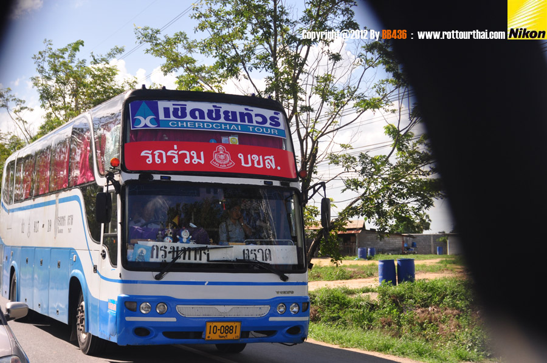

    <div class="page-content">
      <div class="wrapper">
                  <!-- /Navigation -->
          <div class="container">
              <div class="row">
                        <div class="col-lg-12">
                            <h1 class="page-header">การเดินทาง
                                <small></small>
                            </h1>
                            <ol class="breadcrumb">
                              <li><a href="index.html">Home</a>                    </li>
                              <li class="active">การเดินทางโดยรถทัวร์ปรับอากาศ</li>                </ol>
                        </div>
          <div class="text-center"><br><br>
          <h1>การเดินทางโดยรถทัวร์ปรับอากาศ</h1><br>
          <br><br>
          <p>รถปรับอากาศ ชั้น 1 (ปอ.1) ใช้เวลาเดินทางประมาณ 5 ชั่วโมงบริษัทเดินรถเอกชนที่วิ่งบริการ ได้แก่ </p>
            <p>บริษัท สหมิตร-เชิดชัย โทร. 0 2391 2237, 0 2391 4164 สาขาตราด โทร. 0 3951 1062</p>
            <p>โชคอนุกูล ทัวร์ โทร. 0 2392 7680 สาขาตราด โทร. 0 3951 1587, 0 3951 1481 </p>
            <p>ศุภรัตน์ ทัวร์ บริการรถ V.I.P. โทร. 0 2391 2331 สาขาตราด โทร.0 3951 1481</p>

          <br><br>
          <iframe src="https://www.google.com/maps/embed?pb=!1m28!1m12!1m3!1d836863.1365724858!2d100.98784554817301!3d13.002903510827943!2m3!1f0!2f0!3f0!3m2!1i1024!2i768!4f13.1!4m13!3e0!4m5!1s0x311d6032280d61f3%3A0x10100b25de24820!2z4LiB4Lij4Li44LiH4LmA4LiX4Lie4Lih4Lir4Liy4LiZ4LiE4Lij!3m2!1d13.7563309!2d100.5017651!4m5!1s0x31041136a59dca91%3A0x6980c5cafeda61dc!2sTrat!3m2!1d12.2427563!2d102.5174734!5e0!3m2!1sen!2sth!4v1453043106532" width="800" height="600" frameborder="0" style="border:0" allowfullscreen></iframe>
          <br><br><a href="index.html" class="btn btn-skin">close</a>
        </div>

          <!-- Core JavaScript Files -->
          <script src="js/jquery.min.js"></script>
          <script src="js/bootstrap.min.js"></script>
      	<script src="js/jquery.sticky.js"></script>
      	<script src="js/jquery.flexslider-min.js"></script>
          <script src="js/jquery.easing.min.js"></script>
      	<script src="js/jquery.scrollTo.js"></script>
      	<script src="js/jquery.appear.js"></script>
      	<script src="js/stellar.js"></script>
      	<script src="js/wow.min.js"></script>
      	<script src="js/owl.carousel.min.js"></script>
      	<script src="js/nivo-lightbox.min.js"></script>

          <script src="js/custom.js"></script>

      </body>

      </html>

    </div>
    <!-- Core JavaScript Files -->
    <script src="js/jquery.min.js"></script>
    <script src="js/bootstrap.min.js"></script>
	<script src="js/jquery.sticky.js"></script>
	<script src="js/jquery.flexslider-min.js"></script>
    <script src="js/jquery.easing.min.js"></script>
	<script src="js/jquery.scrollTo.js"></script>
	<script src="js/jquery.appear.js"></script>
	<script src="js/stellar.js"></script>
	<script src="js/wow.min.js"></script>
	<script src="js/owl.carousel.min.js"></script>
	<script src="js/nivo-lightbox.min.js"></script>

    <script src="js/custom.js"></script>
    </div>
</body>
</html>

      </div>
    </div>


</html>
